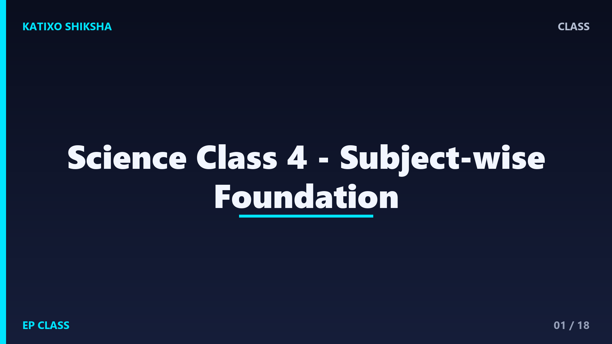
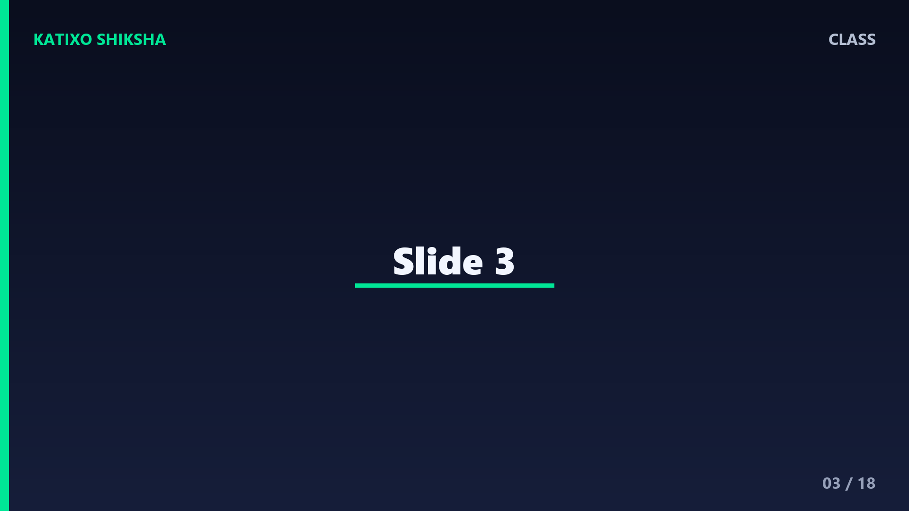
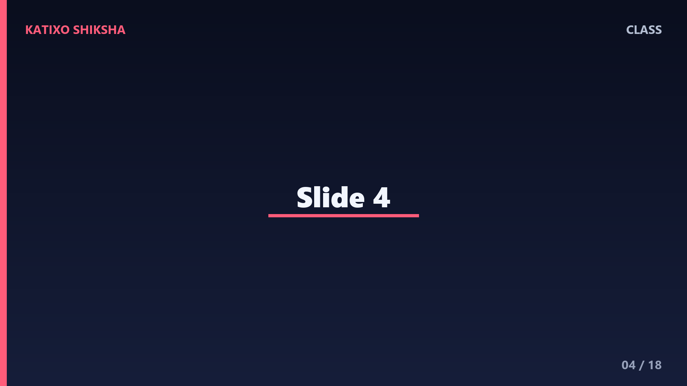
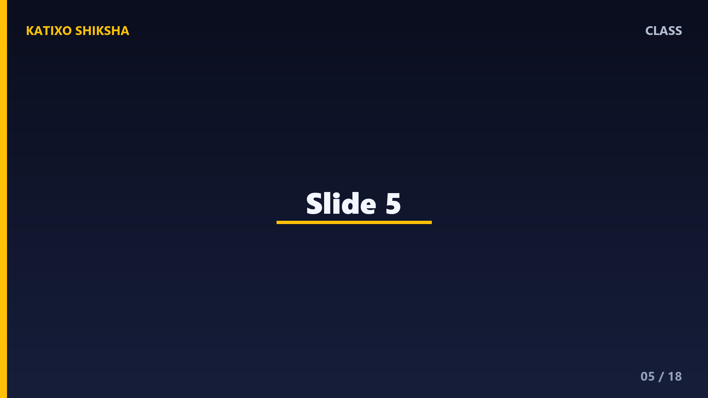
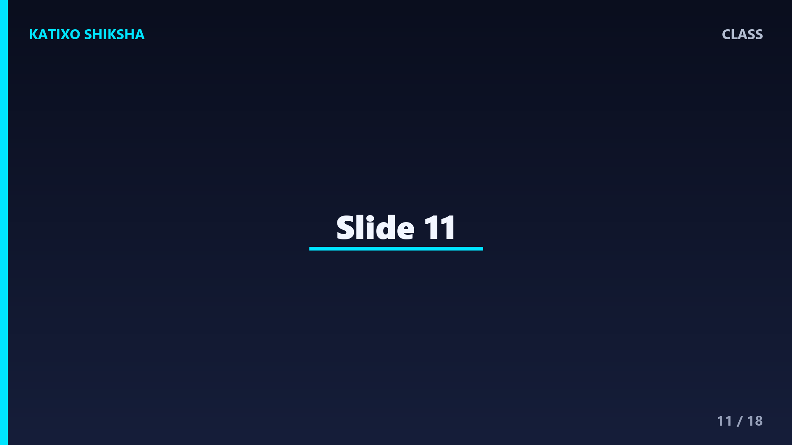

Science Class 4 - Subject-wise Foundation

Slide 1Welcome to Science Class 4. In this subject-wise foundation tutorial, we will learn plants, animals, the human body, matter, force, Earth and environment. Science begins with looking carefully, asking questions, and testing ideas with simple examples around us.
Slide 2Today we will build a simple learning map. We will not memorize random facts. We will connect six big science areas: plants, animals, human body, matter, force, and Earth. Each area helps us understand everyday life better.

Slide 3A scientist does not only read answers. A scientist observes, asks, tests, records and explains. Even a Class 4 student can do science at home, like checking which object floats, which surface is rough, or which plant grows better.

Slide 4Plants are living things. They grow from seeds, need water and sunlight, and respond to their surroundings. Roots hold the plant, the stem carries water, and leaves make food. Flowers and fruits help many plants make new plants.

Slide 5Leaves are like tiny food factories. They use sunlight, water and air to make food for the plant. This process is called photosynthesis. We do not need to remember a difficult formula now. Just remember: sunlight plus water plus air helps leaves make food.
Slide 6Here is a simple activity. Keep one soaked seed on wet cotton and another on dry cotton. Watch them for three days. The seed with moisture usually sprouts better. This helps us learn that seeds need water to start growing.
Slide 7Animals live in different habitats. Fish live in water, camels live in deserts, birds live in trees or nests, and earthworms live in moist soil. A good habitat gives food, water, shelter and space.
Slide 8An adaptation is a feature or behaviour that helps an animal survive. A duck has webbed feet for swimming. A polar animal may have thick fur for warmth. Some animals hide, run fast, or move in groups for safety.
Slide 9A food chain shows how food energy moves. Plants make food. A grasshopper may eat grass. A frog may eat the grasshopper. A snake may eat the frog. If one part of a food chain changes, other living things can also be affected.
Slide 10Our body is a team of organs. The brain helps us think, the heart pumps blood, lungs help us breathe, the stomach helps digest food, and bones give shape and protection. Good food, sleep and exercise keep this team strong.

Slide 11Our sense organs help us understand the world. Eyes see, ears hear, nose smells, tongue tastes, and skin feels. Teeth help us bite and chew food. Brushing twice a day and rinsing after meals protect our teeth.
Slide 12Matter is anything that takes space. We often see matter as solid, liquid or gas. A pencil is solid. Water is liquid. Air is gas. Water is special because we can easily see it as ice, liquid water, and water vapour.
Slide 13Many changes happen around us. Ice melts into water, and water can freeze back into ice. That is a reversible change. But burning paper makes ash and smoke, so we cannot easily get the same paper back.
Slide 14A force is a push or a pull. We push a door, pull a drawer, kick a ball, or press clay into a new shape. Force can start motion, stop motion, change speed, change direction, or change shape.
Slide 15Friction is a force between touching surfaces. It can slow things down, but it also helps us. Without friction, walking would be very hard and bicycle brakes would not work well. Rough surfaces often make more friction than smooth surfaces.
Slide 16The water cycle explains how water keeps moving. The Sun heats water and changes some of it into vapour. Vapour cools and forms clouds. Then rain brings water back to Earth. This cycle supports plants, animals and people.
Slide 17The environment is everything around us: air, water, soil, plants, animals and people. We can help by saving water, reducing waste, caring for plants, and reusing materials. Small habits become big protection when many people follow them.
Slide 18Let us revise. Which plant part takes water from soil? Name one animal adaptation. What are the three common states of matter? Give one example of push and one of pull. Why is friction useful when we walk? If you can explain these, your foundation is strong.